#1117: [TN] Switch total tests from Pos+Neg to Total PCR tests (specimens)
Issue number 1117
jaclyde opened this issue on March 1, 2021, 3:59 PM PST
Labels Backfill Data quality
State: Tennessee
Issue: We have a time series of total, positive and negative tests from the state, backfilling all 3 metrics to 3/24/20 and switching the totaltestresults field to Total PCR tests (specimens).
Additionally we removed the negatives that were calculated from mixed units. See https://github.com/COVID19Tracking/issues/issues/1082 or our Data FAQ for details on this policy.
Source: https://www.tn.gov/health/cedep/ncov/data/downloadable-datasets.html
Comments
Negative values removed: Changes (5).txt
#1117: [TN] Switch total tests from Pos+Neg to Total PCR tests (specimens)
Issue number 1117
jaclyde opened this issue on March 1, 2021, 3:59 PM PST
Labels Backfill Data quality
State: Tennessee
Issue: We have a time series of total, positive and negative tests from the state, backfilling all 3 metrics to 3/24/20 and switching the totaltestresults field to Total PCR tests (specimens).
Additionally we removed the negatives that were calculated from mixed units. See https://github.com/COVID19Tracking/issues/issues/1082 or our Data FAQ for details on this policy.
Source: https://www.tn.gov/health/cedep/ncov/data/downloadable-datasets.html
Comments
Backfill Values updated: Changes (4).txt
Negative values removed: Changes (5).txt
#1110: [TN] Patch 02/23 late update
Issue number 1110
hmhoffman opened this issue on February 24, 2021, 8:06 AM PST
State: TN
Dates affected: 02/23/21
Describe the issue: On February 23, 2021, Tennessee updated their COVID-19 data after the time of our daily update.
Comments
ows edited: 1 TN 2021-02-23 positive: 767315 (was 766089) negative: 6049717 (was 6038118) hospitalizedCumulative: 18363 (was 18311) recovered: 741057 (was 738731) death: 11198 (was 11153) deathConfirmed: 9007 (was 8974) deathProbable: 2191 (was 2179) probableCases: 123387 (was 122807) totalTestsViral: 6693645 (was 6681400) positiveTestsViral: 742855 (was 741941) negativeTestsViral: 5950790 (was 5939459) positiveCasesViral: 643928 (was 643282) totalTestsAntigen: 1318241 (was 1302364) positiveTestsAntigen: 134930 (was 134246) negativeTestsAntigen: 1183311 (was 1168118) lastUpdateTime: 2021-02-23 20:00:00+00:00 (was 2021-02-23 05:00:00+00:00)
#1110: [TN] Patch 02/23 late update
Issue number 1110
hmhoffman opened this issue on February 24, 2021, 8:06 AM PST
State: TN
Dates affected: 02/23/21
Describe the issue: On February 23, 2021, Tennessee updated their COVID-19 data after the time of our daily update.
Comments
ows edited: 1 TN 2021-02-23 positive: 767315 (was 766089) negative: 6049717 (was 6038118) hospitalizedCumulative: 18363 (was 18311) recovered: 741057 (was 738731) death: 11198 (was 11153) deathConfirmed: 9007 (was 8974) deathProbable: 2191 (was 2179) probableCases: 123387 (was 122807) totalTestsViral: 6693645 (was 6681400) positiveTestsViral: 742855 (was 741941) negativeTestsViral: 5950790 (was 5939459) positiveCasesViral: 643928 (was 643282) totalTestsAntigen: 1318241 (was 1302364) positiveTestsAntigen: 134930 (was 134246) negativeTestsAntigen: 1183311 (was 1168118) lastUpdateTime: 2021-02-23 20:00:00+00:00 (was 2021-02-23 05:00:00+00:00)
#1020: [TN] Patch late 12/18 update
Issue number 1020
hmhoffman opened this issue on December 19, 2020, 9:17 AM PST
State: TN
Dates affected: 12/18
Describe the issue: On December 18, 2020, Tennessee updated their COVID-19 data after the time of our daily update.
Comments
#909: [TN] Backfilling first day reporting Antigen tests (10/21)
Issue number 909
the-daniel-lin opened this issue on October 22, 2020, 11:28 AM PDT
Labels Backfill Data quality
State or US: TN
Describe the problem On 10/21, TN began to report antigen tests. We are beginning capture today and need to backfill the missed value from 10/21.
Link to data source https://www.tn.gov/content/tn/health/cedep/ncov/data.html
Comments
BEFORE: 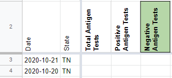
AFTER: 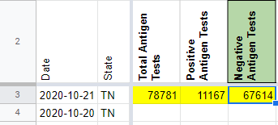
#886: [TN] Current ICU value was entered incorrectly 10/4
Issue number 886
jaclyde opened this issue on October 5, 2020, 6:50 PM PDT
Labels Data quality
State: Tennessee
Problem: Current ICU is entered as positive cases + pending cases, but was accidentally entered as positive cases - pending cases on 10/4.

Comments
Data: 243+15=258
Before: 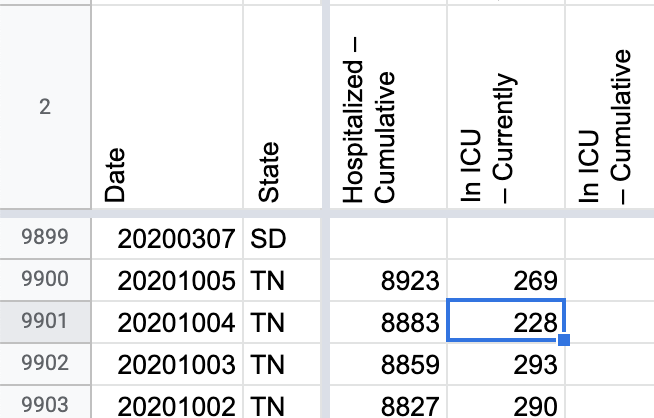
After: 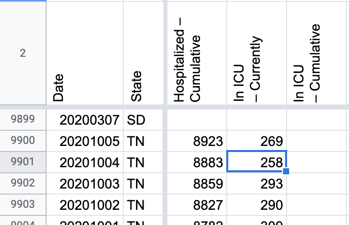
#795: [TN] Probables backfill May 5-July 28
Issue number 795
jaclyde opened this issue on August 26, 2020, 7:57 PM PDT
Labels Data quality Historical Data not stale
State: Tennessee
Problem: We added a metric to store Probable Case data separately on July 28 and need to backfill the previous dates. Coincidentally TN updated late on 7/28/2020 so we initially entered the value from 7/27/2020 for 7/28. That value will be overwritten with the correct value from the state.
Action Plan:
- [x] Fix 7/28 from state xls (pos,neg,confirmed,probable)
- [x] Calculate probables from total-confirmed from 7/27-6/10
- [x] Back-fill probables from state xls for 5/4 - 6/9
Data Source: TN provides the full time series in a csv: https://www.tn.gov/health/cedep/ncov/data/downloadable-datasets.html Public-Dataset-Daily-Case-Info.XLSX
Comments
BEFORE: 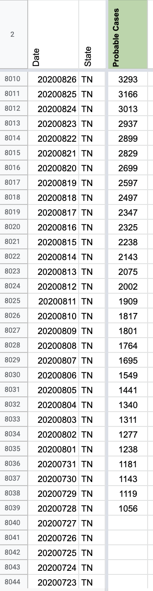
This issue has been automatically marked as stale because it has not had recent activity. It will be closed if no further activity occurs. Thank you for your contributions!
This issue has been closed because it was stale for 15 days, and there was no further activity on it for 10 days. You can feel free to re-open it if the issue is important, and label it as "not stale."
#752: [TN] Historical values now available for ICU and ventilator usage
Issue number 752
MattHilliard opened this issue on August 12, 2020, 7:24 AM PDT
Labels Data quality No data available
State or US: TN
Describe the problem Tennessee recently added current ICU and ventilator usage to their dashboard. This includes numbers going back to 7/28. These appear to be "current" numbers, so backfilling the two weeks of available history should not conflict with the DE pub shift going forward.
Link to data source https://www.tn.gov/health/cedep/ncov/data/hospitalization-data/current-covid-hospitalizations.html
Comments
This issue has been automatically marked as stale because it has not had recent activity. It will be closed if no further activity occurs. Thank you for your contributions!
TN hospital data is constantly revised by the state so this is not currently possible to do reliably
#707: [TN] PCR Test Historicals
Issue number 707
the-daniel-lin opened this issue on July 30, 2020, 9:02 AM PDT
Labels Backfill Historical Data not stale
State or US: Tennessee
Describe the problem Our current historical testing data has 'Total PCR Tests (People)' spanning from 5/13 - 6/11. There is a one day gap on 5/17 where the testing value was reported under 'Total Tests (PCR).' On 6/12, we began reporting all testing numbers under 'Total Tests (PCR).' This is in line with TN's reporting change. On 6/12, they changed their testing number label to be explicitly PCR. This is what we see today in the PDFs.
However, we have a 5/19 outreach that is as follows:
Q: "Does "total tested" refer to people tested or specimens tested? Are antibody tests included in this figure, and if so does the state have plans to break them out?"
A: "The total number of negative and positive results posted on Tennessee’s websites includes PCR testing, which tests for current infection. Antibody testing is not included on our dashboards, but CDC is including antibody testing in the numbers they have reported.
Additionally, we only count a positive case once; subsequent positive tests on one individual do not count toward the total tests posted on Tennessee’s website. CDC’s total testing numbers include all tests performed; therefore, multiple positive tests on one individual will be counted in CDC’s U.S. COVID Testing dashboard. CDC includes multiple positive tests in their count of all tests performed, NOT in their count of cases."
*** This outreach question can be found in the Reporting team outreach sheet.
There are testing numbers spanning all the way back to our first screenshot for 3/15, but TN only begins reporting complete testing numbers on 3/24. When TN began releasing daily PDFs on 4/11, they also included testing numbers, albeit also ambiguous as to what type of testing the numbers referred to. Given the above outreach and the fact that testing trends seem to have been consistent throughout our time series, I think we can make the inference that we should be able to back fill through 3/24. This would be a backfill team decision, though.
Link to data source This data comes from TN's daily Epidemiology and Surveillance Data PDF: https://www.tn.gov/content/tn/health/cedep/ncov/data.html
And the regular state site: https://www.tn.gov/health/cedep/ncov.html
You will have to use the Wayback machine for PDFs before 5/22, as our captures are blank before then.
Screenshot from state site on 3/15:
https://covid-tracking-project-data.s3.us-east-1.amazonaws.com/state_screenshots/TN/TN-20200315-164033.png

Screenshot from complete test data on 3/24 (evening):
https://covid-tracking-project-data.s3.us-east-1.amazonaws.com/state_screenshots/TN/TN-20200324-191014.png

Screenshot from 4/11 PDF (same testing format until 6/12):

Comments
#706: [TN] PCL Historicals
Issue number 706
the-daniel-lin opened this issue on July 30, 2020, 8:07 AM PDT
Labels Backfill Historical Data not stale
State or US: Tennessee
Describe the problem Our current historical data has 'PCR Cases (People)' dating back to 4/29 when we began to track the metric. On 5/4, TN began to separate probable and confirmed cases. From 5/4 - 5/5 (inclusive), we report the proper confirmed and lumped values. Beginning 5/6, TN moved the probable value from the top to a small print footnote at the bottom of the PDF (scroll to the bottom). As a result, we missed the probable values and reported the same values for both lumped and confirmed columns from 5/6 - 6/9 (inclusive). On 6/10, we noticed the fine print and began reporting the correct values, and we have reported the proper values in each column ever since. Beginning 6/12, TN put the probable case value back at the top of the PDF, allowing for easier data collection.
TN began to publish daily PDFs beginning 4/11. Our screenshots of the PDFs only extend to 5/22 before they go blank, so you need to use the Wayback machine or some other method to find values prior to 5/22. I don't know if there's some way to automate taking screenshots from the Wayback machine (?)
We need to:
- Clear values in 'PCR Cases (People)' for 5/3 and prior.
- Add probable values to the lumped 'positive' column from 5/6 - 6/9 (inclusive)
- Thread from 6/10 for precedent: https://covid-tracking.slack.com/archives/CUQ4MMTPD/p1591819795359300
Link to data source
This data comes from TN's daily Epidemiology and Surveillance Data PDF located on the state site: https://www.tn.gov/content/tn/health/cedep/ncov/data.html
5/4 PDF Screenshot:

5/6 PDF Screenshot (only confirmed; scrolled to bottom probable footnote):


Comments
#564: [TN] Backfill current hospitalizations from 5/29 till now
Issue number 564
qpmnguyen opened this issue on July 1, 2020, 1:13 PM PDT
Labels Data quality
TN has been reporting current hospitalizations for a while. Backfill TN data from spreadsheet provided by user on Twitter, dating back to 5/29. Source of data from this page (https://www.tn.gov/health/cedep/ncov/data/hospitalization-data/current-covid-hospitalizations.html)
Comments
https://ewscripps-my.sharepoint.com/:x:/g/personal/phil_williams_newschannel5_com/EUnUm7JMTaFBsHtUIYv37FMBwEJhAUvOA2LkKXCrBJvmkg?rtime=Q5-zF2gf2Eg
BEFORE SCREENSHOT 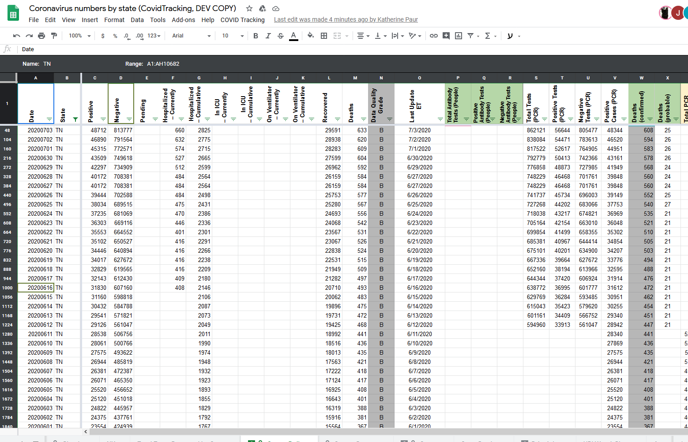
#468: [TN Historicals] May 22 numbers
Issue number 468
muamichali opened this issue on May 29, 2020, 5:58 PM PDT
Labels Historical Data stale
Dear Covid Tracking Project (and RT.live):
First, great job and I appreciate your efforts to distribute good data to everyone. Thank you.
It appears your data for May 22 for the state of Tennessee has an error in the number of tests. It is stated at the level of positives (433). The data set download from the state of Tennessee has it at 7,587. The correction will also impact your number of tests for May 23, which you have at 12,742 versus the state data set at 5,588. I think this is impacting the algorithm at rt.live which uses your data for its calculation (and whom I am copying on this email so they also know) for the state of Tennessee.
Thanks,
Comments
This issue has been automatically marked as stale because it has not had recent activity. It will be closed if no further activity occurs. Thank you for your contributions!
Looks like a data entry mistake; the negative number was not updated on 6/22 but all the other numbers in States Daily are correct. I've fixed the negative number to 348776 (331393+17383) based on the secondary TN screenshots, which fortunately were fixed that day.
Before: 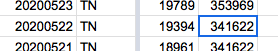
After:

#340: TN 4/30 data is repeated from 4/29
Issue number 340
jfwiii opened this issue on April 30, 2020, 4:17 PM PDT
The new 4/30 data is available at https://www.tn.gov/content/tn/health/cedep/ncov/data.html, and I have pasted a screenshot below.

Comments
The TN 4/30 update was captured in the Covid Tracking Project's daily screenshot log. See image from 4/30 at 11:20pm:

The dataset does not reflect this information.
I submitted a pull request to the csv data file linked in the covid-tracking-data repository. It looks like Tennessee may have been late to update information at the same time the screenshot automation may have executed fewer times over the 4/28-4/30 time period.
Hi @jfwiii Thanks for reporting this issue. TN updated late that day so it missed our publication cut off. We are going to update the 4/30 data based on the 4/30 TN evening screenshot. You should see the correct data reflected on the site shortly.
{kind=link}
Before 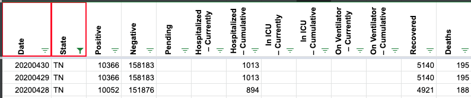
After 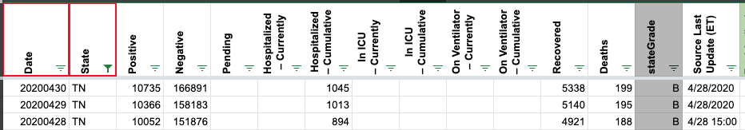
#319: Revise TN negative number for 4/26
Issue number 319
dpthurst opened this issue on April 28, 2020, 10:26 AM PDT
The 4/26 negative number for TN is the sum of negative tests for non-state labs and total tests for state labs. The correct number should be 137807 (adding negative tests for both places).
In addition, the internal screenshotting for the PDF files that Tennessee posts is not working. I thus cannot give screenshots, but there is an internal Slack thread.
Comments
This issue has been automatically marked as stale because it has not had recent activity. It will be closed if no further activity occurs. Thank you for your contributions!
Before: 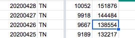 After: 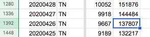
#293: [States Daily CSV] TN deathIncrease is negative for 2020-04-24
Issue number 293
acobolew opened this issue on April 24, 2020, 9:25 PM PDT
[States Daily CSV] TN deathIncrease is negative for 2020-04-24
library(data.table) covidtracking.dt <- fread('https://covidtracking.com/api/v1/states/daily.csv') covidtracking.dt[, date := as.Date(as.character(date), '%Y%m%d')] covidtracking.dt[order(date, decreasing=FALSE)][ , .(date, state, death, deathIncrease) ][deathIncrease < 0] date state death deathIncrease 1: 2020-04-05 VA 51 -1 2: 2020-04-07 DC 22 -2 3: 2020-04-22 AR 42 -1 4: 2020-04-23 PA 1421 -201 5: 2020-04-24 KS 111 -1 6: 2020-04-24 TN 168 -2
Comments
Hi @acobolew In this case, the state revised its numbers down. There is nothing we can do about that.
Backfill Values updated: Changes (4).txt